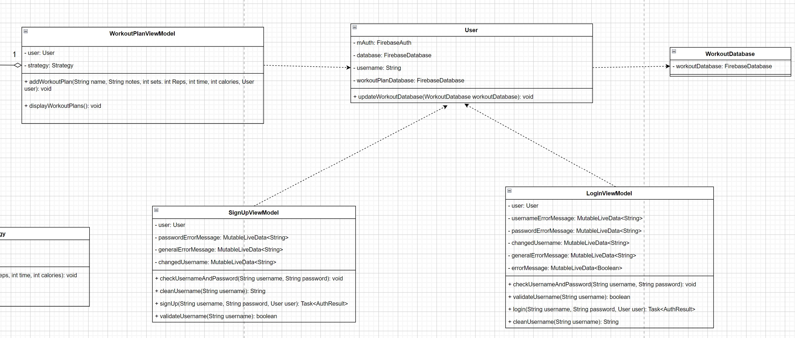
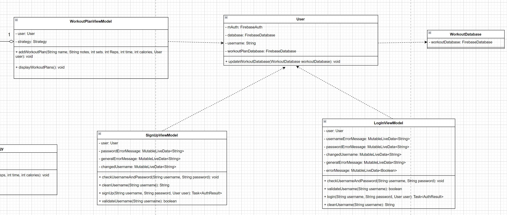

Design & Architecture
Domain Model Diagram
This domain model diagram was created to map
out the different classes our group planned to create. It also
helped us plan out how the classes would interact with each other.
Moreover, all of these classes were implemented in our codebase as
User, CaloriesViewModel, CommunityViewModel, WorkoutViewModel, etc.
We decided to remove and add various attributes compared to the ones in
the domain model but the diagram served as a good starting point for our project.
Usecase Diagram
This use case diagram was created to map out the different primary, supporting, and
offstage actors that are a part of the HealthTracker mobile application we planned to create.
We also created different functional requirements to show the different ways the primary and supporting
actors would potentially use our app. Moreover, we implemented all the functionality described with the creation of
a sign up screen that allows users to create an account, a calories screen that allows users and
international sustainable doctors to calculate the user's daily calorie goal, etc. The diagram was a useful tool
to plan out the User class and what instance variables would need to be created.
Domain Model Diagram
This domain model diagram is a revised version of the one created in Sprint 1. This new domain model
diagram is one that includes the addition of a Workout Database class. This new diagram is more based on
the actual implementation done in the codebase rather than theoretical needs. Moreover, the diagram is better at showing
our current structure of our project and what changes may be needed to improve it. The continuous need to use the User class
incentivised the conversion of the User class to use the singleton design pattern.
Sequence Diagram
This sequence diagram was created to map out the use case of a app user trying
to add his or her weight, height, and gender to the database using the PersonalInformationFragment,
PersonalInformationViewModel, User classes. The sequence diagram also helped to show error checking
where fields are not filled out and thus the process is not successful. Likewise, the classes and methods described
were implemented with methods like addPersonalData with takes in the user's name, weight, height, and gender.
The update method in the diagram was renamed as the updateDocument method in the codebase which has the same functionality.
Domain Model Diagram
 

This domain class diagram was created to plan out the use of the strategy design pattern to implement
functionality of the search bar. The WorkoutPlanNameSearchStartegy class and WorkoutPlanAuthorSearchStartegy class
were created to search for workout plan names and author names respectively. These classes were implemented in the codebase
with similiar methods and the same functionality. Moreover, the strategy interface in the diagram was also implemented
in the codebase. This strategy design pattern allows the user to determine the search bar's functionality on runtime.